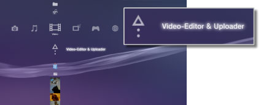
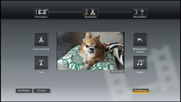

Video > Videoinhalte bearbeiten
Videoinhalte bearbeiten
Sie können Videoinhalten bearbeiten, die im Systemspeicher des PS3™-Systems gespeichert sind.
1. |
Wählen Sie |
|---|---|
|
 |
|
2. |
Wählen Sie |
3. |
Wählen Sie |
4. |
Bearbeiten Sie das Video. |
|
 |
|
5. |
Wählen Sie [Beenden]. |
 (Video) >
(Video) >  (Neues Video erstellen).
(Neues Video erstellen). (Bearbeiten) können Sie bestimmte Szenen entfernen oder Text (bzw. Zeichen) hinzufügen. Gehen Sie zum Abschließen des Vorgangs nach den Anweisungen auf dem Bildschirm vor. Sie können eine Vorschau des bearbeiteten Videos anzeigen lassen, indem Sie
(Bearbeiten) können Sie bestimmte Szenen entfernen oder Text (bzw. Zeichen) hinzufügen. Gehen Sie zum Abschließen des Vorgangs nach den Anweisungen auf dem Bildschirm vor. Sie können eine Vorschau des bearbeiteten Videos anzeigen lassen, indem Sie  auswählen.
auswählen.Anmerkungen
- Wenn Sie in Schritt 3
 (Hinzufügen) auswählen, können Sie weitere Inhaltselemente hinzufügen und zu einer Videodatei zusammenstellen.
(Hinzufügen) auswählen, können Sie weitere Inhaltselemente hinzufügen und zu einer Videodatei zusammenstellen. - Die maximale Wiedergabedauer für bearbeitete Videoinhalte beträgt eine Stunde.
- Sie können bis zu 16 Textelemente zu einem Bildschirm und bis zu 200 Textelemente zu einer bearbeiteten Videodatei hinzufügen.
- Sie können nur voreingestellte Songs als Hintergrundmusik für Ihr Video verwenden. Songs, die im Systemspeicher des PS3™-Systems oder auf einem anderen Datenträger gespeichert sind, können nicht verwendet werden.
Typen von Dateien, die bearbeitet werden können
Die folgenden Typen von Dateien können unter  (Video-Editor & Uploader) bearbeitet werden.
(Video-Editor & Uploader) bearbeitet werden.
- Videoinhalte, die von einem Datenträger oder einem USB-Massenspeichergerät (System-Software Version 3.40 oder höher) im Systemspeicher gespeichert wurden.
- Videoinhalte, die von einem
 (Internet-Browser) (System-Software Version 3.40 oder höher) in den Systemspeicher heruntergeladen wurden.
(Internet-Browser) (System-Software Version 3.40 oder höher) in den Systemspeicher heruntergeladen wurden.
Anmerkungen
- Videos, die vor dem Aktualisieren der System-Software auf Version 3.40 im Systemspeicher gespeichert wurden, Videos mit Urheberrechtsschutzcodierung sowie Inhalte mit Kindersicherungseinschränkungen können nicht bearbeitet werden.
- Achten Sie darauf, die Urheberrechte anderer nicht zu verletzen.